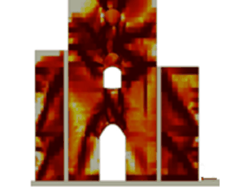

Currently Developing code-compliant, three-component ground-motion selection for base-isolated RC structures, and building toward experimentally grounded vibration control with bi-stable metamaterials.
Selected Work
News
-

Jul 2026New open-access paper in Soil Dynamics and Earthquake Engineering: an efficient OpenSees finite element framework for nonlinear seismic soil–foundation–structure interaction in shallow-founded squat masonry structures. Read the paper -
Jun 2025Hosted by ASDEA Software for a webinar on modelling of bolted steel connections and local buckling in STKO for OpenSees. Watch on YouTube
-
Feb 2025PhD thesis defended at IUSS Pavia.
-
Dec 2024Started post-doc at the University of Chieti–Pescara.
Tools & Projects
ops-post
Interactive 3D post-processor for OpenSees masonry-wall results — stress contours, fibre-level Gauss points, and publication-ready exports.
ops-hpc
Controller for large OpenSeesMP runs on Google Cloud — VM provisioning, parallel execution, cost tracking, and a real-time dashboard.
gmXYZ
Multi-component ground-motion record selection (spectral matching & conditional spectrum) and signal-processing toolkit.
The Good, the Bad, and the IMPL-EX
A practical guide to the IMPL-EX integration scheme for FE analysis — the math, a toy model, and a real seismic-pounding application.
Featured Publication
Peer-reviewed · Soil Dynamics and Earthquake Engineering (2026)
An efficient finite element framework for nonlinear seismic soil–foundation–structure interaction in shallow-founded squat masonry structures
Get in Touch
The form below is the best way to reach me. Send a question, a collaboration, or a project enquiry and it'll come straight to me — I read every message.